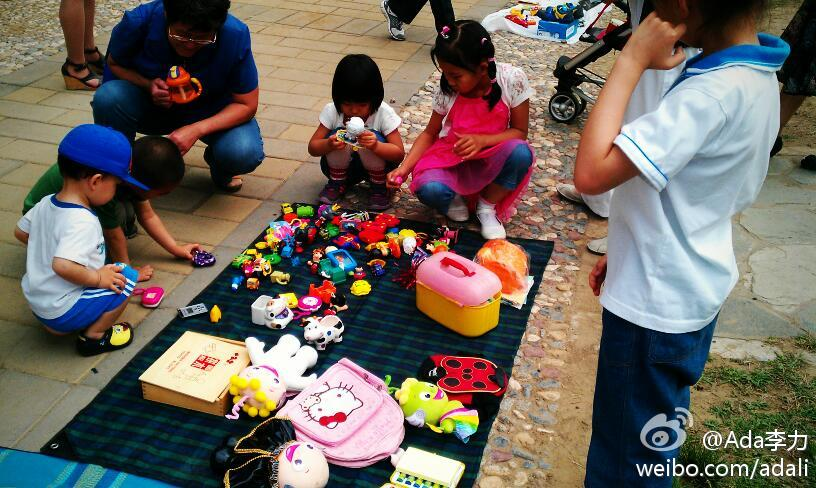

看过《春娇与志明》：第一部没看明白，第二部却看得哈哈直乐。片尾余文乐伪娘版演绎的《别问我是谁》，贱贱的感觉真是到极致了。现在对男性的审美观真的发生了变化，像志明这种高中以后就没长大的，不会关心人，也不能担当，但能带来很多奇思妙想和乐趣的类型男，竟颇受欢.. 春娇与志明 春嬌與志明 (2012)
家附近#玉泉新城#物业周日上午举办了一个跳蚤市场，摆摊的都是小学生，卖一些不用的玩具和书籍。而购买者的基本是更小的孩子。姣姣有一堆攒下的麦当劳和肯德基玩具，按一元一个卖出不少，加上一些文具，收摊时有了22元的营业收入。 网页链接 
 春娇与志明 春嬌與志明 (2012)
春娇与志明 春嬌與志明 (2012)